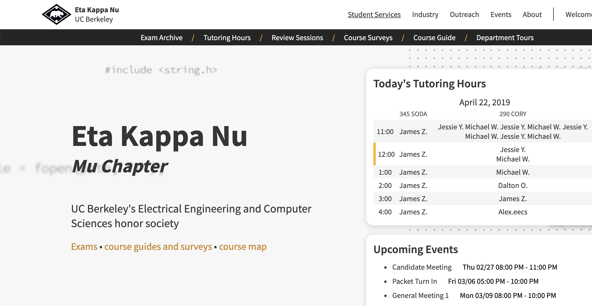

Imprint
A no-compromise social blogging platform.

Imprint.to is a hybrid solution between centralized and decentralized blogging, balancing content ownership with social discovery. To make knowledge accessible for all, we stay away from paywalls, maintain independence of blogs, and help budding bloggers build their audience through the main platform feed. Read more about us here.
Technologies used: React, Node.js, Express, Next.js, MongoDB
Torches
Playing with fire only helps you in this two person shooter game.

This was a project that I made for my CS 61B: Data Structures course at Berkeley. My project partner and I made a random world generator and then added a laser mechanic on top, which could light torches and illuminate squares. We also hosted a dorm tournament, which turned out to be great fun!
Technologies used: Java
HKN Website
Serving the Berkeley EECS Community!

As a core officer of the HKN Computing Services Committee, I lead the development of a new modern website for the honor society. The project mainly uses Django, as well as frontend HTML/CSS with Django templating. See our progress here.
Technologies used: Django, HTML, CSS